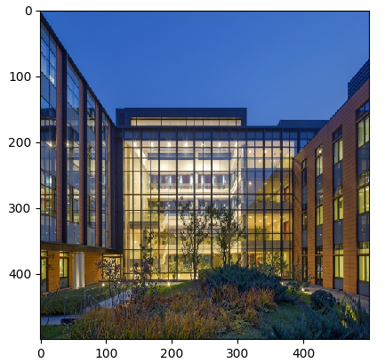
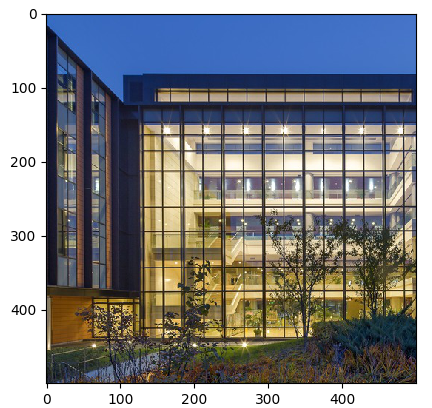

数据处理与数据增强¶

概述¶
数据是深度学习的基础，有好的数据输入，可以对整个深度神经网络训练起到非常积极的作用。所以在获取到原始的数据集后，数据加载训练前，因为数据量、性能等等限制，往往会需要先进行数据处理或者数据增强，从而获得更加优化的数据输入。
同样，MindSpore也为用户提供了数据处理以及数据增强的功能。
从本质上来说，数据增强是通过数据处理中的
map（映射）进行实现，但是因为数据增强提供丰富的变换操作，所以将其单独提出进行描述。
MindSpore支持的数据处理操作¶
MindSpore支持多种处理数据操作，包括复制、分批、洗牌、映射等等，详细见下表：
| 数据处理 | 说明 |
|---|---|
| repeat | 对数据集进行复制，来加倍数据量。 |
| batch | 将数据分批处理，有益于加速训练过程。 |
| shuffle | 对数据进行混洗。 |
| map | 将提供的函数或算子作用于指定的列数据。 |
| zip | 将多个数据集合并成一个数据集。 |
各个操作可以单独进行使用，实际使用过程中往往会根据实际需要进行组合使用，组合使用时推荐使用的顺序如下所示：
如下示例中，读取MNIST数据集时，对数据进行shuffle、batch、repeat操作。
import mindspore.dataset as ds
ds1 = ds.MnistDataset(MNIST_DATASET_PATH, MNIST_SCHEMA) # Create MNIST dataset.
ds1 = ds1.shuffle(buffer_size=10000)
ds1 = ds1.batch(32, drop_remainder=True)
ds1 = ds1.repeat(10)
上面操作先对数据进行混洗，再将每32条数据组成一个batch，最后将数据集重复10次。
下面将构造一个简单数据集ds1，并对其进行数据处理操作，来介绍各类数据处理操作的详细使用。
导入数据处理操作依赖的模块。
import mindspore.dataset as ds
定义一个生成数据集的函数——
generator_func()用于生成数据集。def generator_func(): for i in range(5): yield (np.array([i, i+1, i+2]),)
通过
GeneratorDataset创建ds1数据集，用于执行数据处理操作。ds1 = ds.GeneratorDataset(generator_func, ["data"]) print("ds1:") for data in ds1.create_dict_iterator(): print(data["data"])
输出：
ds1: [0 1 2] [1 2 3] [2 3 4] [3 4 5] [4 5 6]
repeat¶
在有限的数据集内，为了优化网络，通常会将一个数据集训练多次。

在机器学习中，每训练完一个完整的数据集，我们称为训练完了一个epoch。
加倍数据集，通常用在多个epoch（迭代）训练中，通过repeat()来加倍数据量。repeat()定义如下：
def repeat(self, count=None):
我们可以定义ds2数据集，调用repeat来加倍数据量。示例代码如下：
ds2 = ds.GeneratorDataset(generator_func, ["data"])
ds2 = ds2.repeat(2)
print("ds2:")
for data in ds2.create_dict_iterator():
print(data["data"])
其中，将倍数设为2，故ds2数据量为原始数据集ds1的2倍，输出：
ds2:
[0 1 2]
[1 2 3]
[2 3 4]
[3 4 5]
[4 5 6]
[0 1 2]
[1 2 3]
[2 3 4]
[3 4 5]
[4 5 6]
batch¶
将数据集进行分批。在实际训练中，可将数据分批处理，将几个数据作为1组，进行训练，减少训练轮次，达到加速训练过程的目的。MindSpore通过batch()函数来实现数据集分批，函数定义如下：

def batch(self, batch_size, drop_remainder=False, num_parallel_workers=None)
使用GeneratorDataset产生的数据集ds1构建2个数据集。
第1个数据集
ds2，每2条数据为1组。第2个数据集
ds3，每3条数据为1组，并将不足1组的数据截掉。
ds2示例代码如下：
ds2 = ds1.batch(batch_size=2) # Default drop_remainder is False, the last remainder batch isn't dropped.
print("batch size:2 drop remainder:False")
for data in ds2.create_dict_iterator():
print(data["data"])
输出如下所示：
batch size:2 drop remainder:False
[[0 1 2]
[1 2 3]]
[[2 3 4]
[3 4 5]]
[[4 5 6]]
ds3示例代码如下：
ds3 = ds1.batch(batch_size=3, drop_remainder=True) # When drop_remainder is True, the last remainder batch will be dropped.
print("batch size:3 drop remainder:True")
for data in ds3.create_dict_iterator():
print(data["data"])
输出如下所示：
batch size:3 drop remainder:True
[[0 1 2]
[1 2 3]
[2 3 4]]
shuffle¶
对于有序的数据集或者进行过repeat的数据集可以进行混洗。

shuffle操作主要用来将数据混洗，设定的buffer_size越大，混洗程度越大，但时间、计算资源消耗会大。
shuffle()定义如下：
def shuffle(self, buffer_size):
调用shuffle()对数据集ds1进行混洗,示例代码如下：
print("Before shuffle:")
for data in ds1.create_dict_iterator():
print(data["data"])
ds2 = ds1.shuffle(buffer_size=5)
print("After shuffle:")
for data in ds2.create_dict_iterator():
print(data["data"])
可能的输出如下，可以看到进行数据混洗后，数据的顺序发生了随机的变化。
Before shuffle:
[0 1 2]
[1 2 3]
[2 3 4]
[3 4 5]
[4 5 6]
After shuffle:
[3 4 5]
[2 3 4]
[4 5 6]
[1 2 3]
[0 1 2]
map¶
map（映射）即对数据进行处理，譬如将彩色图片的数据集转化为灰色图片的数据集等，应用非常灵活。
MindSpore提供map()函数对数据集进行映射操作，用户可以将提供的函数或算子作用于指定的列数据。
用户可以自定义函数，也可以直接使用c_transforms或py_transforms做数据增强。
详细的数据增强操作，将在文后数据增强章节进行介绍。
map()函数定义如下：
def map(self, input_columns=None, operations=None, output_columns=None, columns_order=None,
num_parallel_workers=None):
在以下示例中，使用map()函数，将定义的匿名函数（lambda函数）作用于数据集ds1，使数据集中数据乘以2。
func = lambda x : x*2 # Define lambda function to multiply each element by 2.
ds2 = ds1.map(input_columns="data", operations=func)
for data in ds2.create_dict_iterator():
print(data["data"])
代码输出如下，可以看到数据集ds2中各行的数据均乘以了2。
[0 2 4]
[2 4 6]
[4 6 8]
[6 8 10]
[8 10 12]
zip¶
MindSpore提供zip()函数，可将多个数据集合并成1个数据集。
如果两个数据集的列名相同，则不会合并，请注意列的命名。
如果两个数据集的行数不同，合并后的行数将和较小行数保持一致。
def zip(self, datasets):
采用前面构造数据集
ds1的方法，构造1个数据集ds2。def generator_func2(): for i in range(5): yield (np.array([i-3, i-2, i-1]),) ds2 = ds.GeneratorDataset(generator_func2, ["data2"])
通过
zip()将数据集ds1的data1列和数据集ds2的data2列合并成数据集ds3。ds3 = ds.zip((ds1, ds2)) for data in ds3.create_dict_iterator(): print(data)
输出如下所示：
{'data1': array([0, 1, 2], dtype=int64), 'data2': array([-3, -2, -1], dtype=int64)} {'data1': array([1, 2, 3], dtype=int64), 'data2': array([-2, -1, 0], dtype=int64)} {'data1': array([2, 3, 4], dtype=int64), 'data2': array([-1, 0, 1], dtype=int64)} {'data1': array([3, 4, 5], dtype=int64), 'data2': array([0, 1, 2], dtype=int64)} {'data1': array([4, 5, 6], dtype=int64), 'data2': array([1, 2, 3], dtype=int64)}
数据增强¶
在图片训练中，尤其在数据集较小的情况下，用户可以通过一系列的数据增强操作对图片进行预处理，从而丰富了数据集。
MindSpore提供c_transforms模块以及py_transforms模块函数供用户进行数据增强操作，用户也可以自定义函数或者算子进行数据增强。MindSpore提供的两个模块的简要说明如下表，详细的介绍请参考API中对应模块的说明。
| 模块名称 | 实现 | 说明 |
|---|---|---|
c_transforms |
基于C++的OpenCV实现 | 具有较高的性能。 |
py_transforms |
基于Python的PIL实现 | 该模块提供了多种图像增强功能，并提供了PIL Image和numpy数组之间的传输方法。 |
对于喜欢在图像学习任务中使用Python PIL的用户，py_transforms模块是处理图像增强的好工具。用户还可以使用Python PIL自定义自己的扩展。
数据增强需要使用map()函数，详细map()函数的使用，可参考map章节。
使用c_transforms模块进行数据增强¶
将该模块引入进代码。
import mindspore.dataset.transforms.vision.c_transforms as transforms import matplotlib.pyplot as plt import matplotlib.image as mpimg
定义数据增强算子，以
Resize为例：dataset = ds.ImageFolderDatasetV2(DATA_DIR, decode=True) # Deocde images. resize_op = transforms.Resize(size=(500,500), interpolation=Inter.LINEAR) dataset.map(input_columns="image", operations=resize_op) for data in dataset.create_dict_iterator(): imgplot_resized = plt.imshow(data["image"]) plt.show()
运行结果可以看到，原始图片与进行数据处理（Resize()）后的图片对比，可以看到图片由原来的1024*683像素，变化为500*500像素。

图1：原始图片

图2：重设尺寸后的图片
使用py_transforms模块进行数据增强¶
将该模块引入到代码。
import mindspore.dataset.transforms.vision.py_transforms as transforms import matplotlib.pyplot as plt import matplotlib.image as mpimg
定义数据增强算子，通过
ComposeOp接口将多个数据增强组合使用, 以RandomCrop为例：dataset = ds.ImageFolderDatasetV2(DATA_DIR) transforms_list = [ transforms.Decode(), # Decode images to PIL format. transforms.RandomCrop(size=(500,500)), transforms.ToTensor() # Convert PIL images to Numpy ndarray. ] compose = transforms.ComposeOp(transforms_list) dataset = dataset.map(input_columns="image", operations=compose()) for data in dataset.create_dict_iterator(): print(data["image"]) imgplot_resized = plt.imshow(data["image"].transpose(1, 2, 0)) plt.show()
运行结果可以看到，原始图片与进行数据处理（RandomCrop()）后的图片对比，可以看到图片由原来的1024*683像素，变化为500*500像素。
图1：原始图片

图2：按500*500随机裁剪后的图片